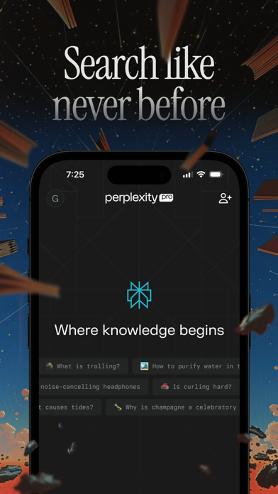
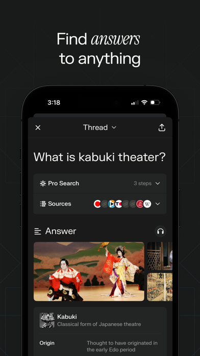
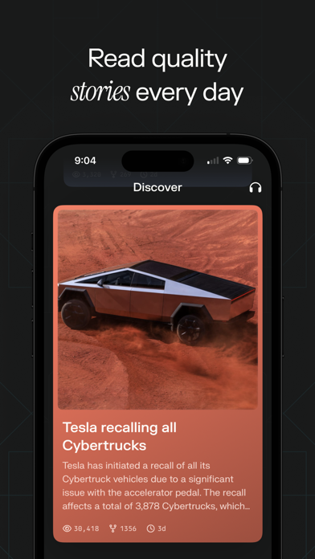
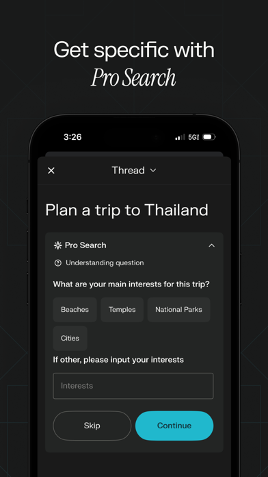

04 · Layer 2 · Adjacent Categories
相邻品类借鉴 · 深度拆解
O
Oura · Smart Ring App
App Store 4.9★ · 智能硬件 App 设计天花板 · 订阅制
Layer 2
核心交互模式
Oura App 是智能硬件 App 的行业标杆。其核心设计围绕三个"分数"（Readiness / Sleep / Activity）展开，每个分数用彩色渐变环形图展示，环的颜色从红→橙→绿→蓝渐变，直观表达"差→一般→好→优秀"——用户不需要读数字就能感知状态。硬件连接状态放在设置页，主页只展示"身体状态"而非"设备状态"——这个主次分层对 Pill V5 至关重要。
值得学习的 3 个设计决策
① 三环评分体系：Readiness（准备度）、Sleep（睡眠）、Activity（活动）三个环形图构成 App 首页的视觉核心。环的颜色从红渐变到蓝，用颜色而非数字传达信息——这对 Pill V5 的药仓余量展示有直接启发。
对 Pill V5：药仓余量环 + 依从性环 + 下次用药倒计时环 = 三环主页布局。
② 硬件连接状态的自然表达：Oura 的戒指连接状态从不喧宾夺主——它在设置页用一个小图标 + "已连接 · 电量 82%" 表示，主屏不显示。这避免了硬件状态信息污染主体验。
对 Pill V5：药盒连接状态放在设置或个人页，主页只展示"用药状态"而非"设备状态"。
③ "趋势"而非"绝对值"的数据叙事：Oura 不说"昨晚睡了 7.2 小时"，而是说"你的睡眠比上周平均多了 23 分钟"——趋势对比比绝对数字更有行为引导力。
对 Pill V5：依从性报告用"本周比上周准时了 12%"而不是"本周依从率 87%"，更有激励效果。
📱 界面截图
🎬 Oura 戒指交互动画
以下视频展示了 Oura 戒指的 UI 交互细节——环形进度填充、睡眠阶段切换、活动目标的动态反馈。这些微交互对 Pill V5 的硬件联动 UI 设计有直接参考价值。
Oura 戒指 UI 交互演示 · 来源：Instagram · 共 5 段动图
🎯 对 AI Pill V5 的核心启发：三环评分体系（药仓余量 + 依从性 + 下次倒计时）是 Pill V5 主页的最优视觉框架。硬件状态放设置页，主页只展示"用药状态"。颜色编码优于数字，趋势对比优于绝对值。触觉反馈（药盒按键 → App 震动确认）是超越 Oura 的差异化交互。
S
Streaks · Habit Tracker
App Store 4.8★ · 习惯打卡设计标杆 · 付费买断
Layer 2
核心交互模式
Streaks 将"完成一个习惯"的交互简化为长按图标——图标填满颜色 → 震动反馈 → 完成，整个过程不到 1 秒。这种触觉反馈+视觉确认的设计在打卡类 App 中尚无对手。首页用彩色圆形图标网格展示最多 12 个习惯，已完成的填满颜色，未完成的保持镂空——状态一目了然。
值得学习的 3 个设计决策
① 长按即完成的交互模型：比"点击 → 弹窗 → 确认"快得多。Streaks 证明了打卡类交互可以用触觉反馈替代视觉确认——长按的震动就是"已记录"的信号。
对 Pill V5：理想体验 = 药盒物理按键按下 → App 震动确认 → 无需看屏幕。
② 连续天数的奖励递增：连续 3 天/7 天/30 天/100 天分别有不同的视觉奖励（徽章颜色/动画变化）。这种离散里程碑比连续进度条更有激励效果。
③ 镂空 vs 填满的二元状态：不需要百分比，不需要环图——已完成/未完成两个状态用填满/镂空区分，一目了然。这是信息极简的典范。
📱 界面截图
🎯 对 AI Pill V5 的核心启发：长按即完成的交互模型 + 触觉反馈 = 最优打卡体验。离散里程碑奖励比连续进度条更有效。镂空/填满二元状态是信息极简的典范。
AI
ChatGPT · AI 对话
App Store 4.8★ · OpenAI · 免费增值
Layer 2
核心交互模式
ChatGPT 的移动端设计围绕对话气泡流展开。用户输入 → AI 流式输出（逐字出现）→ 用户可对每条 AI 回复做反馈（👍👎 / 重新生成 / 复制 / 朗读）。新对话从一个空旷的欢迎页开始，下方有建议 Prompt 卡片。
对 AI Pill V5 的启发
流式输出 + 反馈机制：AI 用药问答应该使用流式输出（降低等待焦虑）+ 每条回答附带"有帮助吗？"反馈（用于 AI 质量改进）。
设计要点：用药建议必须附带免责声明标识——这是医疗类 AI 的合规底线。
建议 Prompt 卡片的设计：ChatGPT 欢迎页的建议卡片（"写一封邮件""解释量子计算"）降低了"不知道该问什么"的冷启动问题。
对 Pill V5：首页可预设 AI 快捷提问——"这个药和食物有什么禁忌？""我忘了早上吃药怎么办？"
📱 移动端 · 截图暂未收录 · 分析基于公开信息
🎯 对 AI Pill V5 的核心启发：流式输出 + 建议卡片 + 反馈机制。用药建议必须附带免责声明标识——这是医疗 AI 合规底线。
P
Perplexity · AI Search & Chat
App Store 4.8★ · 深色模式 AI 搜索 · 免费增值
Layer 2
核心交互模式
Perplexity 与 ChatGPT 的最大区别在于可信度设计。每个回答上方标注"Pro Search · 3 Steps"，下方列出颜色编码的来源图标（Google 🔴🟡🟢🔵 / YouTube ▶️ / Wikipedia W），用户可以点击来源验证信息——这在医疗场景中至关重要。
值得学习的 3 个设计决策
① 来源标注的可视化：彩色圆形来源图标在回答顶部横向排列，一眼能看出信息来源的多样性。深色背景 + 亮色来源图标 = 高对比度、强信任感。
对 Pill V5：AI 用药建议必须标注来源——"来自 FDA 药品说明书""来自 Mayo Clinic"——来源的可信度决定了建议的可信度。
② "Pro Search · 3 Steps" 的过程透明化：告诉用户 AI 搜索进行了几步——这建立了"AI 不是魔法，是有方法论支撑的"的认知。
对 Pill V5：AI 分析症状时可以展示步骤——"① 识别药品 → ② 检索相互作用数据库 → ③ 生成建议"，提升透明度。
③ 结果页的结构化摘要：Perplexity 在回答开头给出一个"摘要卡片"（定义 + 来源），然后才是详细内容。信息分层清晰。
对 Pill V5：药品 AI 问答可以用"一句话总结 → 详细说明 → 来源"的三层结构。
📱 界面截图




🎯 对 AI Pill V5 的核心启发：来源标注可视化 + 过程透明化（搜索步骤）+ 结构化摘要 = 医疗场景 AI 可信度的三个支柱。
F
Fantastical · Calendar
App Store 4.2★ · Flexibits · 日历/时间线 UI 设计标杆
Layer 2
核心交互模式
Fantastical 的核心设计创新是DayTicker + 月视图的双层时间线。顶部是横向滚动的日期条（DayTicker），底部是当月日历。事件列表按时间排序，每个事件用彩色圆点+左色条标记所属日历。自然语言输入是 Fantastical 的标志性功能——输入"Lunch with Sarah tomorrow at noon"自动解析为日历事件。
对 AI Pill V5 的启发
DayTicker 横向日期条的用药场景适配：一条横向的日期条 + 下方按时间排列的用药列表 = 用药时间线的最优信息架构。用户可以左右滑动查看不同日期的用药记录。
对 Pill V5：首页采用"今天 · 用药时间线"布局，顶部横向日期条切换历史记录。
自然语言输入的启发："每天早上 8 点吃一粒阿莫西林，饭后，连续 7 天"——用自然语言一句话设置完整用药计划。这是 AI Pill V5 的核心体验差异点。
📱 移动端 · 截图暂未收录 · 分析基于公开信息
🎯 对 AI Pill V5 的核心启发：DayTicker 横向日期条 + 自然语言输入设置用药计划。这是 AI 功能的最佳切入点——一句话完成复杂设置。
H
Headspace · Sleep & Meditation
App Store 4.8★ · 健康类 App 情感设计天花板 · 订阅制
Layer 2
核心交互模式
Headspace 用温暖的颜色（橙/黄/紫渐变）、可爱的圆形插画、鼓励性的微文案和舒缓的动画，将"冥想"这个抽象概念转化为一个友好、可亲近的日常仪式。其设计语言的核心是"消除焦虑感"——从配色到按钮到文案，没有一处让用户感到压力。
值得学习的 3 个设计决策
① 治愈性配色 + 可爱插画：橙色/黄色渐变传递温暖，紫色传递宁静，圆形插画（睡着的火苗、微笑的灯泡、带 Zzz 的小人）让复杂功能变得可爱可亲。没有任何"医疗感"——但反而更能建立情感连接。
对 Pill V5：药品图标可以设计成友好的圆形简笔画（而非写实的药丸照片），减轻"我在生病"的心理暗示。
② "Stress less" 式的正向框定：Headspace 不说"减少焦虑"，而说"轻松一点"；不说"你必须每天冥想"，而说"从 3 分钟开始也很好"。这种去压力化的文案策略对用药 App 有重要启发——"你漏服了！"远不如"没关系，现在补上也很好"更有效。
对 Pill V5：漏服提醒 = "现在补上也来得及 ✨" 而非 "你错过了用药！⚠️"
③ 内容卡片的分组设计：Sleep 页用四种不同类型的卡片（Sleepcasts / Wind Downs / Sleep Music / Kids & Parents）组织内容，每个卡片有独特的插画和描述。这种"按体验类型分组"而非"按功能分组"的信息架构值得借鉴。
对 Pill V5：用药管理可以按"场景"而非"功能"分组——早晨用药包、旅行用药包、按需用药包。
📱 界面截图
🎯 对 AI Pill V5 的核心启发：治愈性配色 + 正向框定文案 + 内容分组设计。用药 App 不需要"医疗感"——温暖、可亲、去压力化的设计更能建立情感连接。漏服提醒用"现在补上也来得及 ✨"而非"你错过了！⚠️"。